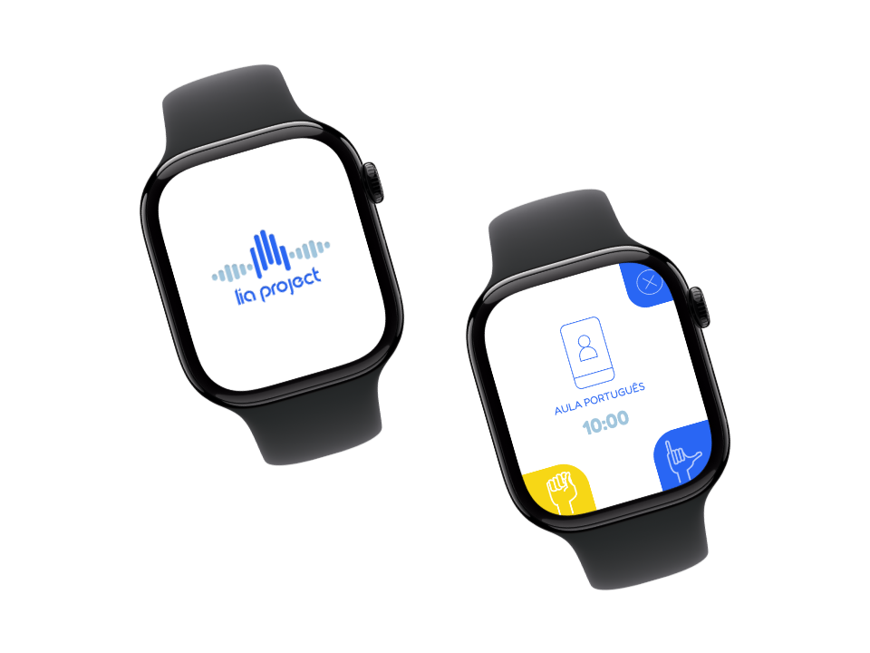
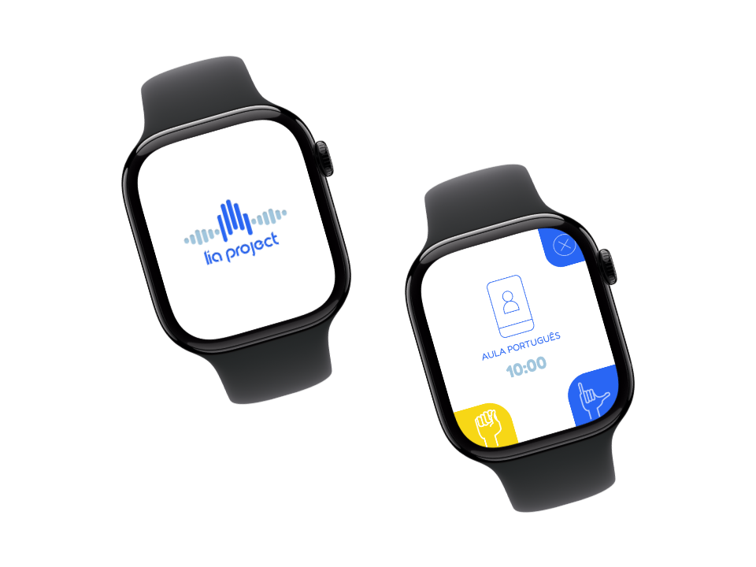
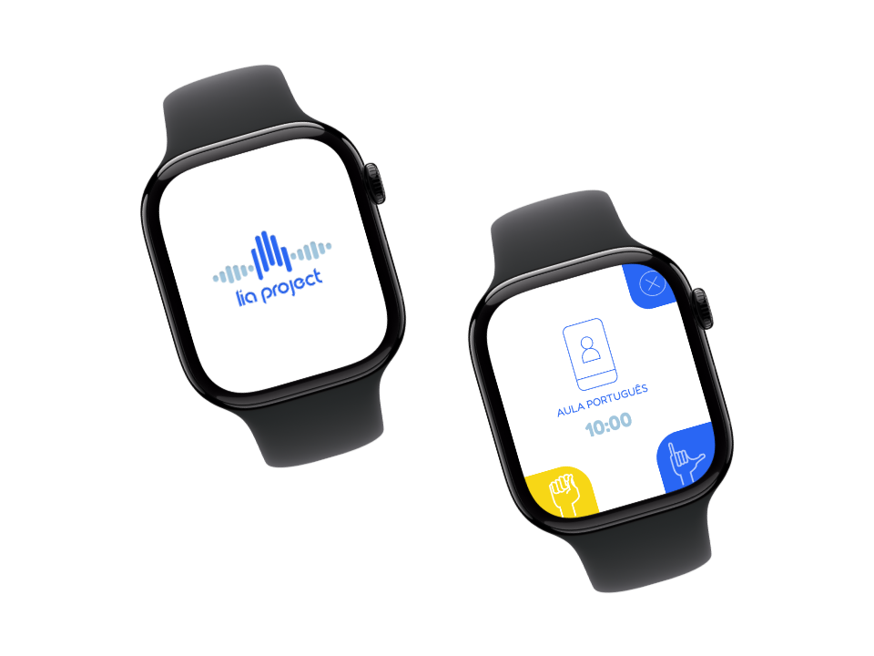

A excelência no desenvolvimento
de software.
 


A excelência no desenvolvimento
de software.

Seu negócio não precisa se aventurar em tendências passageiras ou promessas milagrosas.
Procuram-se solucionadores de problemas que possam compreender e executar aquilo que o cliente deseja, de forma
eficiente e segura.
É assim que a Byteforge desenvolve o seu software:
A chama da criatividade e uma sólida base técnica forjam a excelência.
Nossos sistemas atendem grandes empresas, novos empreendimentos e comunidades inteiras nos ramos de
administração, venda, comunicação, educação e muitos outros.
Utilizamos tanto tecnologias bem fundamentadas como disruptivas para
proporcionar resultados inovadores ao seu negócio, com os menores riscos possíveis.
Desenvolver sistemas de informação não é uma tarefa simples – é uma atividade essencial dentro
de um mundo interconectado e de altas velocidades.
Conheça nossas soluções abaixo:


Tradutor de LIBRAS em legenda e áudio para ambientes de videochamada por visão computacional
SAIBA MAIS
O Projeto LIA busca transformar a experiência de comunicação das pessoas com deficiência auditiva, usando a LIBRAS – Linguagem de Sinais Brasileira.
Surdos e mudos não podem ser excluídos das conversas. A Internet tem ajudado muito nesse sentido, mas ainda dificulta o acesso e a troca de informações para esse grupo social.
Uma plataforma para videochamadas em LIBRAS
vai te entregar o poder de fala, mesmo com quem
não fala do mesmo jeito que você.
Segundo a Pesquisa Nacional de Saúde em 2019, o Brasil tinha 17,3 milhões de pessoas com algum tipo de deficiência auditiva.
Essas pessoas enfrentam problemas diários de exclusão e dificuldade para comunicação social.
Quando a deficiência é de grau severo e a pessoa não conhece a LIBRAS, o problema se torna ainda mais crítico.

Utilizamos redes neurais e visão computacional para identificar os sinais de LIBRAS com precisão, a partir de vídeos e imagens capturadas por câmera.

O LIA interpreta sinais de LIBRAS e os transforma em texto ou áudio, promovendo inclusão e facilitando a comunicação entre surdos e ouvintes.

A base do projeto é o treinamento de redes neurais para reconhecimento de sinais da LIBRAS através de técnicas de visão computacional.
A LIA enxerga para entender os sinais.
A LIA precisa enxergar para entender os gestos, capturando e visualizando para depois tratar essas imagens.
O LIA aprende com os dados.
Com redes neurais, o LIA entende padrões e decide o que está sendo dito em LIBRAS.
O sistema interpreta.
O sistema processa e transforma os sinais em texto ou áudio, interpretando com precisão o sinal.
Facilitando a comunicação.
A LIA pode facilitar chamadas ou interações humanas com base na tradução feita.

Analista de dados